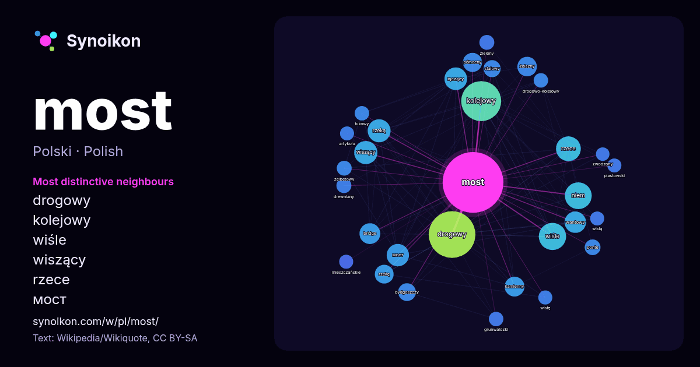

Polski · lista słów dnia
most
“bridge” · Słowa wokół niego w 1836 wystąpieniach z Wikipedii, Wikiquote.

Najbardziej charakterystyczni sąsiedzi
- drogowy 153×
- kolejowy 73×
- wiśle 52×
- wiszący 42×
- rzece 40×
- мост 39×
- łączący 36×
- wantowy 36×
- bridge 31×
- żelazny 29×
- kamienny 28×
- rzeką 26×
- niem 25×
- rzekę 24×
- stalowy 22×
- ponte 19×
- żelbetowy 18×
- drogowo-kolejowy 17×
- grunwaldzki 17×
- łukowy 17×
× = ile razy częściej niż w ogólnym tekście Wikipedii.
Najczęstsi sąsiedzi
- drogowy 166
- kolejowy 122
- wiśle 57
- niem 55
- rzece 47
- wiszący 41
- rzeką 40
- łączący 39
- мост 38
- wantowy 35
- warszawie 34
- bridge 33
- latach 31
- kamienny 30
- żelazny 29
- północny 28
- rzekę 27
- krakowie 26
- poznaniu 26
- wrocławiu 26
W kontekście
- weryfikacji. Uwagi: Tabela „najdłuższe mosty w trakcie swej budowy” zawiera przemieszane długości całkowite mostów i długości ich najdłuższych przęseł. Wikipedia snippets · Most
- Geografia most skalny – forma rzeźby skalnej Most – wieś w Bułgarii, w obwodzie Kyrdżali Most – miasto w Czechach, siedziba powiatu Most Most – stacja Wikipedia snippets · Most (ujednoznacznienie)
- Most Kierbedzia, oficjalnie most Aleksandryjski, także I most – pierwszy warszawski stalowy most na Wiśle, zbudowany w latach 1859–1864 według projektu Wikipedia snippets · Most Kierbedzia
- Most Poniatowskiego, właśc. most Księcia Józefa Poniatowskiego (dawniej: most Mikołajewski, most im. Cesarza Mikołaja II, Trzeci Most), zwyczajowo Poniatoszczak Wikipedia snippets · Most Poniatowskiego
- Most Karola (cz. Karlův most, niem. Karlsbrücke) – most na Wełtawie w Pradze czeskiej łączący dzielnice Malá Strana i Staré Město, będący jedną z najsłynniejszy … Wikipedia snippets · Most Karola w Pradze
- Most Brookliński (ang. Brooklyn Bridge) – jeden z najstarszych mostów wiszących na świecie o długości 1834 m (przęsło główne znajdujące się nad wodą ma Wikipedia snippets · Most Brookliński
- Most nad Sundem (duń. Øresundsbroen, szw. Öresundsbron, oficjalna nazwa hybrydowa używana przez operatora to Øresundsbron) – wantowy most drogowo-kolejowy Wikipedia snippets · Most nad Sundem
- Most Staromiejski – most drogowy nad rzeką Wartą w centrum Gorzowa Wielkopolskiego. W pobliżu mostu znajduje się galeria handlowa NoVa Park. Budowla ma Wikipedia snippets · Most Staromiejski w Gorzowie Wielkopolskim
Więcej słów
Obliczone wcześniej 2026-10-09 z ustawieniami domyślnymi (±5 słów, średni korpus). Interaktywna mapa może odświeżyć dane na żywo.
Interfejs przetłumaczony maszynowo; poprawki mile widziane.